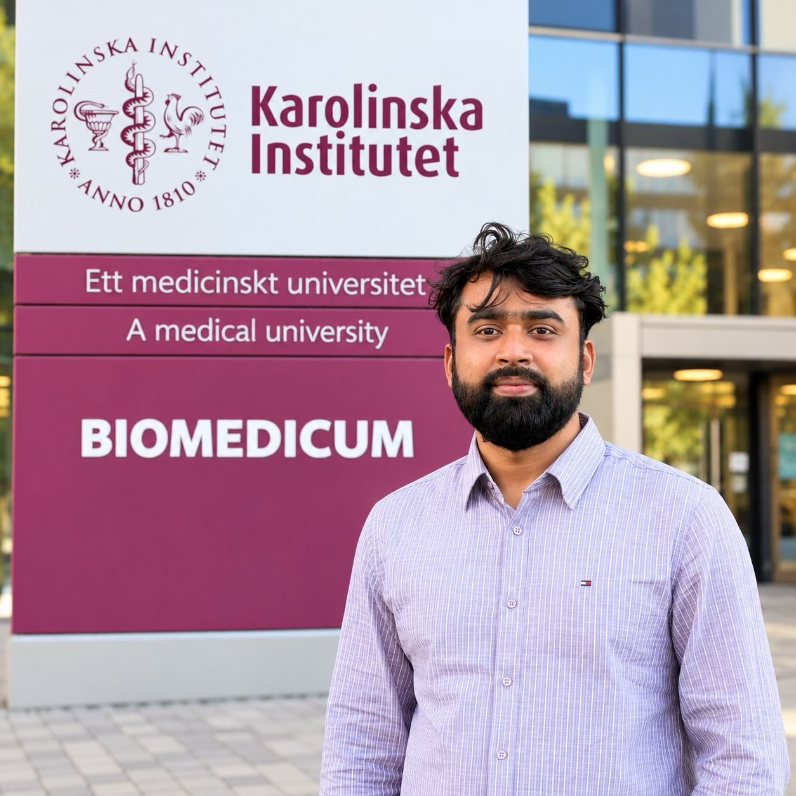

DOCTORAL MILESTONE · OCT 2026
Starting my MSCA PhD at Karolinska Institutet
A new chapter in medical AI and breast cancer research.
I have joined the Department of Medical Epidemiology and Biostatistics at Karolinska Institutet as a doctoral researcher in the HER-CARE MSCA Doctoral Network (DC09).
My doctoral work explores AI-driven personalized breast cancer screening, using mammography and breast MRI to investigate future cancer risk.